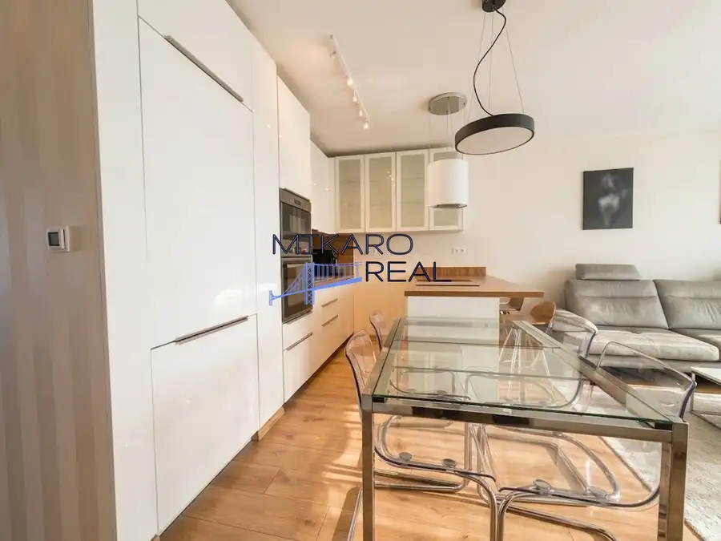
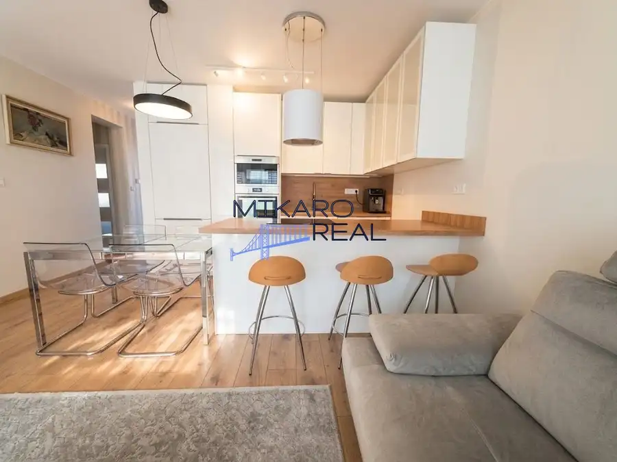
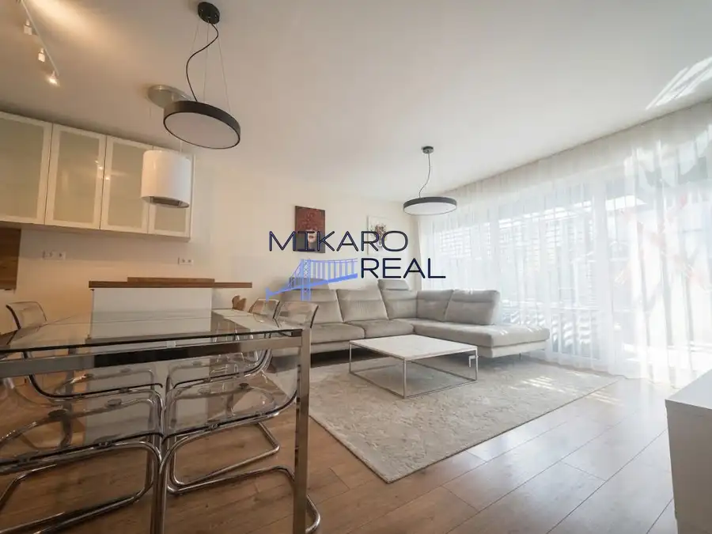
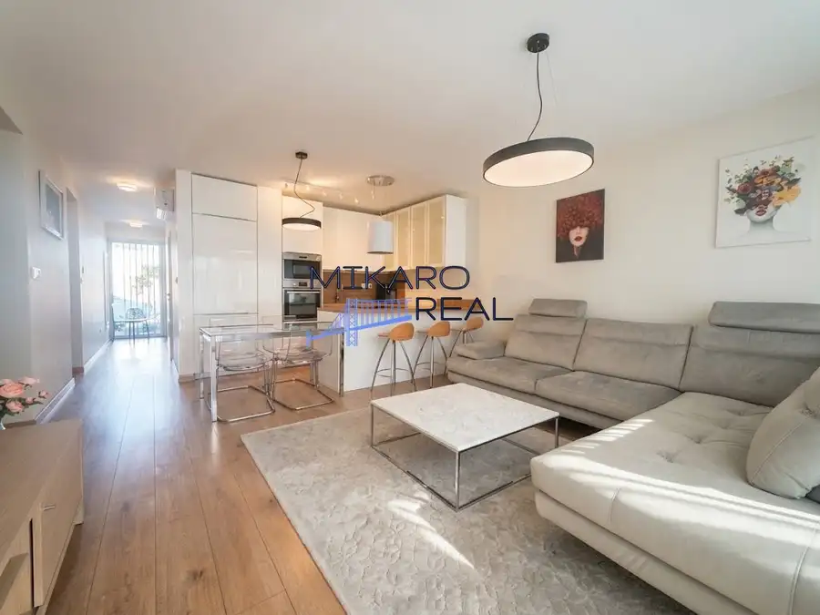
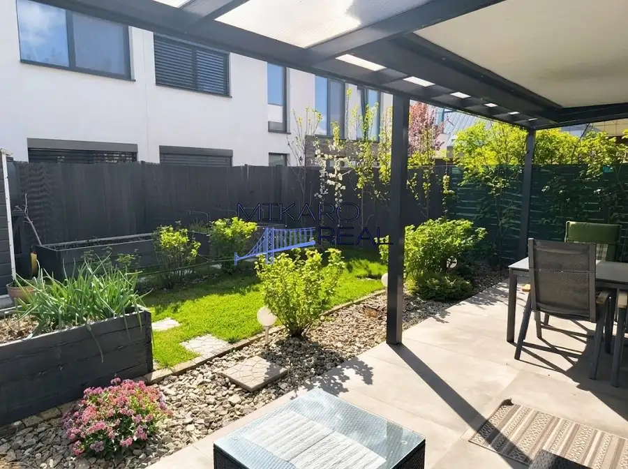
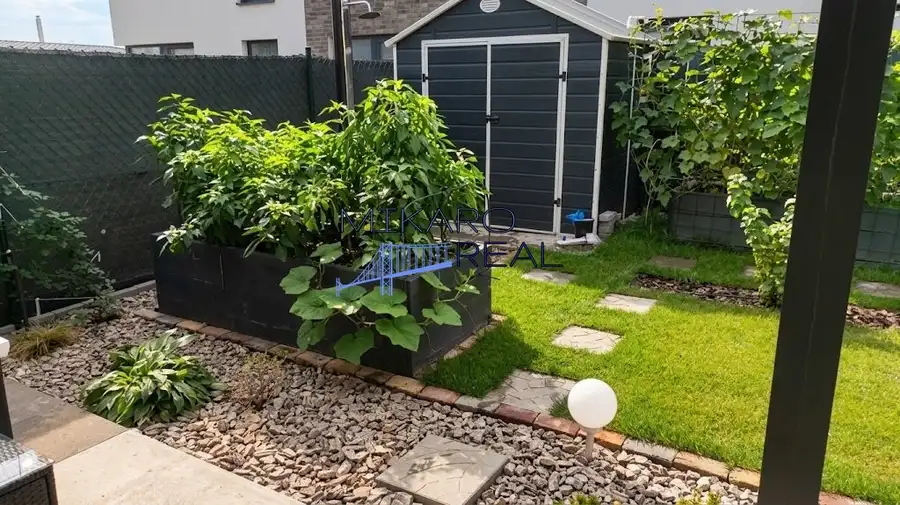
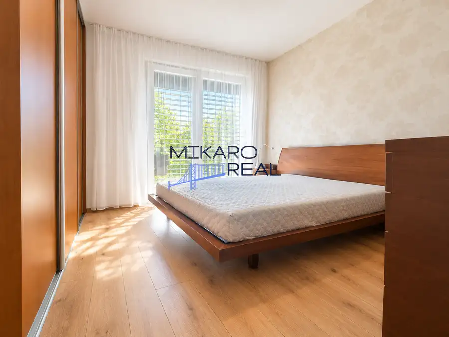
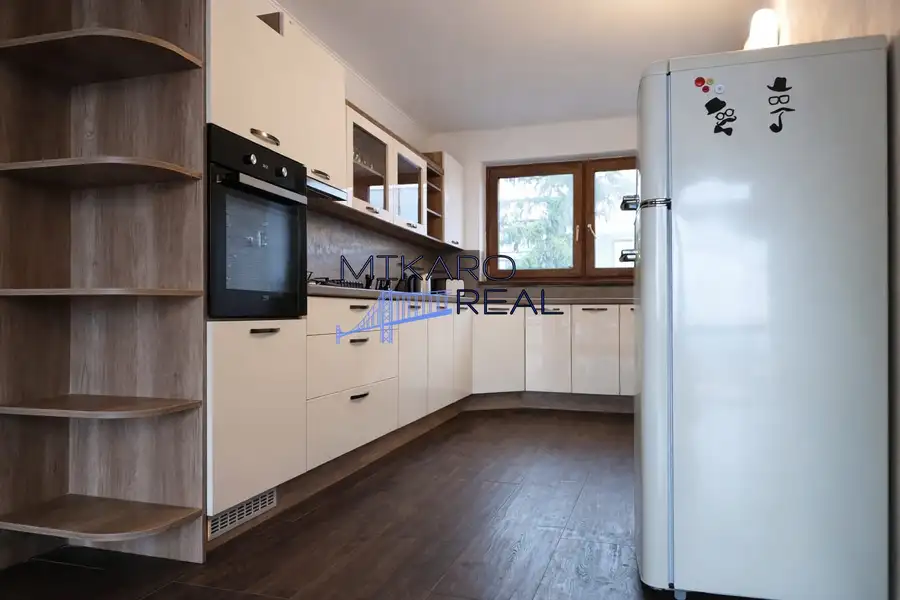

Oáza pokoja a moderného bývania: 3-izbový byt s vlastnou záhradou, predzáhradkou a studňou | Nová Dedinka
Nová Dedinka








- Dispozícia3-izbový
- Plocha73.99 m²
- Poschodie1. z 2
- StavNovostavba
- VlastníctvoOsobné
O nehnuteľnosti
MIKARO REAL Vám ponúka na predaj krásny 3-izbový byt v novostavbe LASTOVIČKY, ktorý spája komfort moderného bývania s pocitom vlastného domu.Ak hľadáte bývanie, kde si ráno vychutnáte kávu vo vlastnej záhrade, deti sa môžu hrať na čerstvom vzduchu a zároveň máte všetko potrebné na dosah, tento byt môže byť presne tým pravým miestom pre Vás.Byt sa nachádza na prízemí novostavby na Krajnej ulici v obci Nová Dedinka a ponúka nielen komfortný interiér, ale aj vlastnú predzáhradku, záhradu a dokonca vlastnú studňu.DOMOV, KTORÝ MÁ SVOJU ZÁHRADUByt s úžitkovou plochou 73,99 m² ponúka príjemné a praktické bývanie pre pár, jednotlivca aj rodinu s deťmi.Veľkým benefitom je vonkajší priestor:•predzáhradka – 21 m²•vlastná záhrada – 81 m²•vlastná studňa s hĺbkou približne 8 – 9 m•priame a pohodlné využitie vonkajšieho priestoru•ideálne miesto na rannú kávu, grilovanie, oddych či detské hryPráve kombinácia novostavby, prízemia a vlastnej záhrady vytvára atmosféru bývania v rodinnom dome, avšak s komfortom bytu.PREMYSLENÁ DISPOZÍCIAByt je dispozične riešený veľmi prakticky a poskytuje dostatok priestoru aj súkromia.Nájdete tu:•priestrannú obývaciu izbu spojenú s kuchynskou a jedálenskou časťou•2 samostatné nepriechodné izby, vhodné ako spálňa, detská izba alebo pracovňa•elegantnú kúpeľňu s vaňou aj sprchovacím kútom•samostatné WC•praktickú chodbu•samostatnú technickú miestnosť s elektrickým kotlom, ktorý zabezpečuje vykurovanie bytu a ohrev teplej úžitkovej vody (TÚV)Technická miestnosť je praktickým riešením, vďaka ktorému zostáva technológia oddelená od obytných priestorov.KOMFORT POČAS CELÉHO ROKAO príjemnú teplotu v interiéri sa stará klimatizácia umiestnená v chodbe, ktorá zabezpečuje komfortné chladenie celého bytu.Súkromie a ochranu pred letným slnkom poskytujú exteriérové žalúzie na všetkých oknách.Byt zároveň ponúka:•elektrické podlahové vykurovanie DEVI•digitálne termostaty v každej izbe•elektrický kotol na vykurovanie a ohrev TÚV•6-komorové plastové okná s trojsklomKVALITNÉ MATERIÁLY A NADŠTANDARDPri výstavbe boli použité kvalitné materiály a vybavenie:•pálená tehla Heluz/Porotherm•kvalitné zateplenie•fasáda s prvkami holandských lícových tehál RUSTIQUE•plávajúce podlahy KRONOPOL•veľkoformátová dlažba V&B X-PLANE•sanita a vybavenie od značiek Kaldewei, Hansgrohe a Geberit•okná s trojsklom•exteriérové žalúzie•klimatizácia•elektrické podlahové vykurovanieMESAČNÉ NÁKLADYMesačné náklady na bývanie sú približne:•správa: 12 €•fond opráv: 35 €•vodné a stočné: približne 97 €•elektrická energia: približne 111 €Spolu približne 255 € mesačne.Odpadové vody sú v súčasnosti riešené žumpou, ktorej pravidelnú údržbu a chod zabezpečuje správca.Obec Nová Dedinka zatiaľ nemá vybudovanú kanalizáciu. Podľa plánovaného harmonogramu by mala byť kanalizácia dokončená najneskôr v roku 2028, pričom plánovaný termín je rok 2027. Po jej vybudovaní je preto naplánovaná zmena súčasného spôsobu odvádzania odpadových vôd.INŽINIERSKE SIETEByt je napojený na:•elektrickú energiu•obecnú voduVykurovanie a ohrev teplej úžitkovej vody zabezpečuje elektrický kotol umiestnený v samostatnej technickej miestnosti.PARKOVANIEK bytu je možné dokúpiť až 2 vlastné parkovacie miesta.Cena jedného parkovacieho miesta: 7 500 €NOVÁ DEDINKA – POKOJ VIDIEKA A DOBRÁ DOSTUPNOSŤNová Dedinka ponúka príjemné bývanie v pokojnom prostredí s veľmi dobrou dostupnosťou do Bratislavy aj Senca.Veľkým benefitom je občianska vybavenosť v bezprostrednom okolí:•autobusová zastávka približne 7 minút pešo•potraviny Kraj a 101 Drogérie približne 200 m•v tesnej blízkosti vzniká nová budova základnej školy a materskej školy•priamo v areáli sú detské preliezky, pieskovisko a spoločné ohnisko•pokojné prostredie vhodné pre rodinné bývanieCENACena bytu: 249 500 €Parkovacie miesto: 7 500 € / ksMožnosť dokúpiť 2 parkovacie miesta.BYT JE K DISPOZÍCII KÚPOUByt je voľný a k dispozícii kúpou, takže si svoje nové bývanie môžete začať užívať bez dlhého čakania.Ak hľadáte moderný 3-izbový byt, ktorý ponúka viac súkromia, vlastnú záhradu a atmosféru rodinného domu, príďte sa pozrieť osobne. Byt sa predáva čiastočne zariadený so všetkými vstavanými spotrebičmi a nábytkom.V CENE JE ZAHRNUTÉ:• Kompletný právny servis prostredníctvom zmluvného advokáta• Vypracovanie všetkej zmluvnej dokumentácie (ZBZ, Kúpna zmluva)• Poplatky za katastrálne konanie (štandardný vklad)• Zabezpečenie súdneho znalca na vypracovanie znaleckého posudku• Profesionálne finančné a hypotekárne poradenstvo pre najvýhodnejšie financovanie na trhu• Osobná asistencia až po finálne odovzdanie nehnuteľnosti a prepis všetkých energií u dodávateľovDohodnite si obhliadku a príďte sa presvedčiť, či práve toto môže byť Váš nový domov.Touto nehnuteľnosťou Vás prevedie certifikovaný realitný maklér:Katarína Buzová+421 903 939 881buzova@mikaroreal.sk
Parametre
- Cena vrátane energií
- Nie
- Doprava
- Cyklistická infraštruktúra, Vlak, Diaľkový autobus, Cesta
- Druh
- 3 izbový byt
- Dátum zverejnenia
- 30. 09. 2026
- Energetický certifikát budovy
- nie je
- Energie
- 255
- Plocha predzáhradky
- 21 m²
- Podlažie
- 1
- Počet izieb / miestností
- 3
- Počet nadzemných podlaží
- 2
- Počet spální
- 1
- Príprava teplej vody
- El. akumulačný boiler
- Rok kolaudácie
- 2021
- Rok výstavby
- 2021
- Stav nehnuteľnosti
- Novostavba
- Telekomunikácie
- Optická sieť
- Typ
- Predaj
- Typ konštrukcie
- Tehlová
- Umiestnenie
- Prízemie
- Vlastníctvo
- Osobné
- Vybavenie
- Predzáhradka, Technická miestnosť, Záhrada, Záhradný domček, Altánok / posedenie
- Vykurovanie
- Podlahové, Klimatizacia
- Zdroj tepla
- Zemný plyn
- Úžitková plocha
- 73.99 m²
Kde to je


Mohlo by Vás zaujímať
 BytNové
189 000 €NA PREDAJ: Kompletne zrekonštruovaný 2,5-izbový byt (64,84 m²) s balkónom a vlastným kotlom – SNP 14, Ivanka pri Dunaji
Ivanka pri Dunaji
2-izbový64.84 m²2. podlažie
BytNové
189 000 €NA PREDAJ: Kompletne zrekonštruovaný 2,5-izbový byt (64,84 m²) s balkónom a vlastným kotlom – SNP 14, Ivanka pri Dunaji
Ivanka pri Dunaji
2-izbový64.84 m²2. podlažie
 BytNové
225 000 €Priestranný 4-izbový byt s loggiou – ideálny na rekonštrukciu podľa vlastných predstáv
Podunajské Biskupice, Bratislava
4-izbový75.13 m²7. podlažie
BytNové
225 000 €Priestranný 4-izbový byt s loggiou – ideálny na rekonštrukciu podľa vlastných predstáv
Podunajské Biskupice, Bratislava
4-izbový75.13 m²7. podlažie

BytNové 299 000 €Predaj: Zrekonštruovaný 3-izbový byt s 2 lodžiami v rodinnej vile – Bratislava Kramáre, Ambrova ulica Nové Mesto, Bratislava 3-izbový83.21 m²2. podlažie